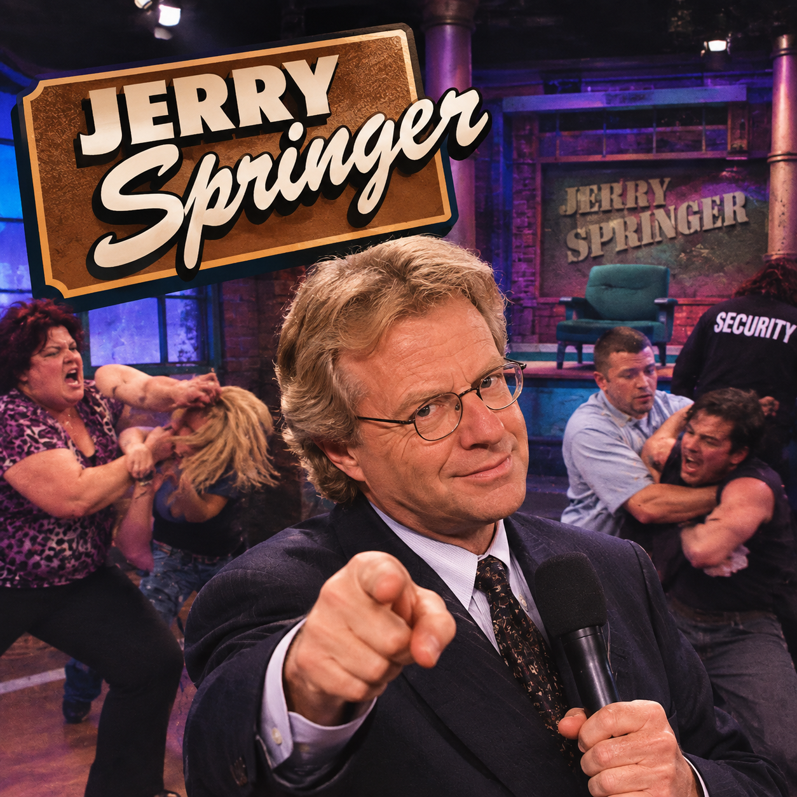

Imagem gerada por inteligência artificial
"Jerry Springer" é a segunda paródia gravada para o álbum Running with Scissors, lançada em 1999. A música é uma paródia de "One Week", sucesso de 1998 da banda Barenaked Ladies, e tem como tema o programa de televisão The Jerry Springer Show, conhecido por seus convidados polêmicos, discussões familiares e situações bastante exageradas.
Para preparar a música, "Weird Al" assistiu a alguns episódios do programa até entender a fórmula básica utilizada nos episódios e transformá-la em uma letra cheia de referências e humor.
A canção apresenta uma visão satírica do programa e de seus acontecimentos caóticos. Tress MacNeille participa da gravação fazendo uma participação como a mulher com quem Al discute durante a música. "Jerry Springer" também é uma das várias músicas de "Weird Al" relacionadas à televisão, utilizando um programa bastante conhecido como base para sua paródia.
Originalmente, havia planos para a produção de um videoclipe para a música, e o próprio Jerry Springer chegou a ser convidado para participar. Springer demonstrou interesse inicialmente, mas mudou de ideia depois de ouvir a canção, pois considerou que ela apresentava uma visão negativa demais de seu programa. Por esse motivo, o videoclipe acabou não sendo produzido.
Nas apresentações ao vivo, "Jerry Springer" costuma receber uma introdução instrumental e ser executada em um ritmo um pouco mais lento do que a gravação original. Essa alteração facilita para Al acompanhar a grande quantidade de palavras da letra, permitindo que ele consiga recitar os versos com mais clareza e manter-se afinado.
It's been one week since we got to see
Cheatin' lovers and cousins that marry
Five days since they had the show
With the hermaphrodite, the slut, and the crack ho
Three days since we heard the tale
About the guy who learned his woman was a she-male
Yesterday it occurred to me
That I've been watchin' a bit too much Jerry Springer
Holy cow, d'you see it last week?
Well, they had this one freak
Who sucker-punched his whole family
Do you recall when the brawl
Became a total free-for-all
And Jerry's in the middle tryin' to be the referee
Hey, see the stripper with the implants
She likes to lap dance
And date the boyfriend of her mother
Now here come's Jerry's next guest
And it's a slugfest
'Cause it's her trailer trash brother
Nymphomaniac is back on crack
It's like "When Animals Attack"
They all exhibit reprehensible behavior
Hit 'em in the nose, tear off their clothes
Step on their toes, that's how it goes
They get so violent they have to sign a waiver
They're always swearin', cursin', kickin' butt, and pointin' blame
On the air? They don't care, they've got no shame
There was one guy who I'm sure felt a little strange
When he found out that his wife had a sex change
They have a tendency to scream and yell constantly
They have a history of ripping off their shirts
It's been one week since they had the fight
With the Siamese twins and the transvestite
Five days since that awful brawl
They still haven't got the blood off the wall
It's been three days since the bitter feud
Between the KKK and that gay Jewish black dude
Yesterday, finally dawned on me
I'm spendin' way too much time on that Jerry Springer
Guy Guest : Baby, I've been sleepin' with your sister
Gal Guest : Oh? Well, which one?
Guy Guest : All of them
Gal Guest : Oh! Well, I've been sleepin' with your best friend Jake!
Guy Guest : Yah? Well, well me too!
Gal Guest : Oh!
Guy Guest : And I've sleepin' with your dog Woofie!
(barking)
Gal Guest : Woofie, you b-tch!
Gal Guest : Well, I'm also sleepin' with your pet GOAT!
(bleating)
Guy Guest : That goat doesn't love you!
Once you start watchin', there's just no stoppin'
Your brain shuts down, then your IQ's droppin'
Jerry's the king of confrontation
He's a sensation
He puts the 'sin' in syndication
It's totally worthless, like a bad check
It's like a train wreck
Don't wanna stare but you can't look away
Like Sally Jesse he does talk shows
But with more weirdos
The ratings jumpin' higher everyday
If you've seen the show, well then you know
It's just as low as you can go
The guests are tacky and they're lacking in their hygiene
And pretty soon some ugly goon
Comes in the room and then it's BOOM
In the face of some unsuspecting drag queen
Well it's the kind of show where people scream obscenities
Yankin' hair, throwin' chairs at their hubbies
"Jerry! Jerry!" Now the crowd starts their favorite chant
Should I turn off my TV? I just can't
I have a tendency to watch it religiously
I have a history of taping each one
It's been one week since the show about
Psycho killers with problems they should work out
Five days since the big surprise
When some loser's wife said she's still dating twenty guys
Three days since he interviewed
A bunch of psychic porn star midgets who were all nude
Yesterday, it occurred to me
That I've been watchin' a bit too much Jerry Springer
Tired of wastin' my time on that Jerry Springer
I've got way too much class to watch Jerry Springer
Come over here and pull on my finger